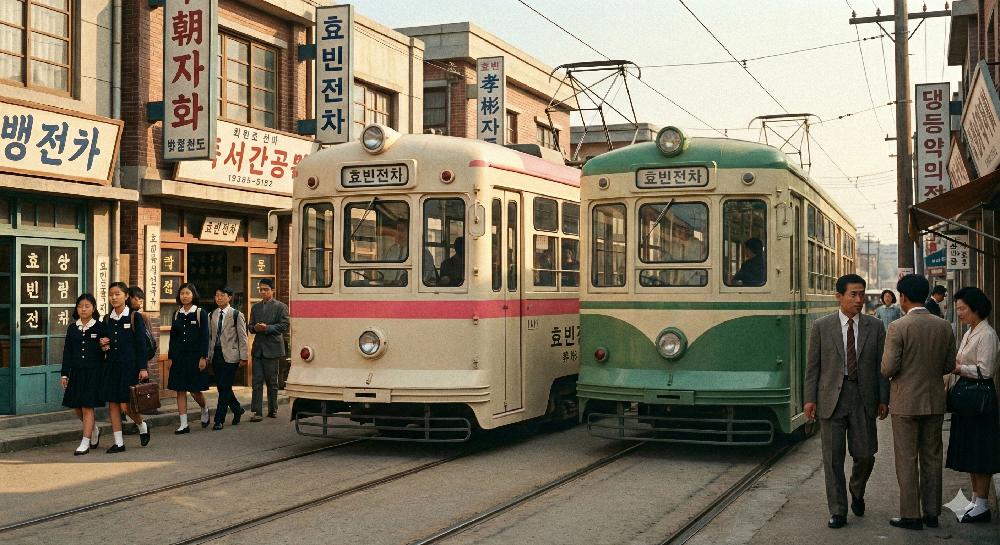

효빈교통공사 7000호대 전동차

- 1. 개요
- 2. 역사 (효빈전차와 퇴역 차량)
- 3. 분류 (세대별)
- 3.1. 1세대 (2009년)
- 3.2. 2세대 (2015년)
- 3.3. 3세대 (2020년)
- 3.4. 4세대 (2024년)
- 4. 배속 및 운용
- 5. 여담 (래핑 열차 등)
- 6. 관련 문서
1. 개요
"100년을 달린 효빈의 낭만, 노면전차의 부활"
효빈시의 도로 위를 합법적으로 쏘다니는 분홍색 길막러(?)
효빈교통공사가 효빈 도시철도 7호선에서 운용 중인 노면전차(트램) 차량이다.
7호선의 뿌리는 무려 1931년 4월 5일 개업한 사철 '효빈전차'까지 거슬러 올라가는, 효빈시 역사 그 자체인 살아있는 전설의 노선이다. 과거 회주공업 효빈전차운영본부가 자사 통근 및 구도심 교통을 위해 운영하던 시절을 거쳐, 효빈광역시로 이관된 후 대대적인 현대화 사업을 통해 지금의 최첨단 저상 트램으로 재탄생했다.
노선 색상은 벚꽃과 항구의 일몰을 상징하는 분홍색(#FF8899)으로, 구도심의 레트로한 감성과 현대적인 트램의 세련됨을 절묘하게 섞어놓았다. 2009년 도시철도 정식 편입과 함께 1세대 트램이 굴러가기 시작했으며, 폭발적인 관광 및 통근 수요를 감당하기 위해 현재 4세대까지 순차적으로 덩치를 키우며 진화 중이다.
특히 현재 대한민국에 유일하게 명맥이 끊기지 않고 남은 전통 노면전차(트램)라는 엄청난 상징성을 쥐고 있다. 이 압도적인 희소성 덕분에 효빈 시민들의 발 역할은 물론, 트램을 타보고 사진을 남기기 위해 전국 각지, 나아가 해외에서까지 몰려드는 관광객들로 사시사철 문전성시를 이룬다.
2. 역사 (효빈전차와 퇴역 차량)

현재 운행 중인 저상 트램 이전, 효빈시의 낭만을 상징하던 전설적인 차량들이다.
- 목조전차 (1~20호): 1931~1968년 운행. 개업 초기형 모델로 바닥에서 올라오는 덜컹거림과 특유의 나무 냄새, 종소리가 특징이었다.
- 구형전차 (101~130호): 1965~2009년 운행. 반세기 가까이 효빈 시민과 회주공업 노동자들의 발이 되어주었으며, 현대화 사업으로 눈물을 머금고 퇴역했다. 일부 차량은 현재 내항차량기지 인근 박물관에 보존되어 있다.
3. 분류 (세대별)
현대화 사업 이후 도입 시기에 따라 1~4세대로 구분한다.
3.1. 1세대 (2009년)
.webp)
- 차량번호: 7001~7011 (총 11편성, 2량)
- 특징: 도시철도 정식 편입과 함께 도입된 최초의 현대식 저상 트램. 유럽형 각진 디자인을 채택했다.
3.2. 2세대 (2015년)
- 차량번호: 7012~7022 (총 11편성, 3량)
- 특징: 효빈항 일대 관광객 증가로 수송력이 박살나자 부랴부랴 들여온 증강분. 1세대보다 1량 늘어난 3량 모듈 구성이다.
3.3. 3세대 (2020년)
.webp)
- 차량번호: 7023~7044 (총 22편성, 2량)
- 제작: 회주공업
- 특징: 잔존하던 구형 전차를 완전히 밀어내기 위해 도입. 회주공업이 직접 제작했으며, 공기역학적 유선형 디자인과 시인성 좋은 대형 LED 행선판을 달고 나왔다.
3.4. 4세대 (2024년)
- 차량번호: 7045~7066 (총 22편성, 3량)
- 제작: 회주공업
- 특징: 배터리 하이브리드 시스템 탑재로 도심 미관을 해치는 전선 없이 무가선 주행이 가능하다. 3세대와 패밀리룩을 이루지만 3량 편성이라 길쭉하다.
4. 배속 및 운용
7호선의 모든 차량은 효빈항 인근의 내항차량사업소에서 일괄 관리한다.
내항차량사업소 (Naehang Depot)
"트램들의 안식처이자 '만마루'의 성지"
7호선 만마루역에서 기지로 이어지는 인입선로가 분기된다. 기지로 들어가는 길목이 좁은 골목과 시장통을 관통하기 때문에, 사람과 상인들 사이로 거대한 트램이 아슬아슬하게 지나가는 이국적인 풍경을 볼 수 있다.
성지순례: 역명과 지명이 하필 '만마루(Manmaru)'라서, 애니메이션 BanG Dream!(마루야마 아야의 캐치프레이즈) 팬들과 러브 라이브! 슈퍼스타!!(시부야 카논의 부엉이 이름, 아라시 치사토의 상징) 팬들의 필수 성지순례 코스가 되었다. 기지 앞 구내식당인 '만마루 돈까스' 사장님은 매번 몰려오는 오타쿠들 덕분에 덩달아 싱글벙글이라는 후문.
5. 여담 (래핑 열차 등)


- 미모로 멱살 잡은 임자매 트램: 효빈교통공사의 7호선 전담 공식 마스코트 캐릭터인 임세정(언니)과 임세하(동생) 자매 래핑 열차가 운행 중이다. 주목할 만한 점은 이 자매의 일러스트가 공기업 캐릭터라고는 믿기지 않을 정도로 엄청나게 예쁘고 트렌디하게 뽑혔다는 것. 수려하고 청순한 작화 덕분에 오타쿠는 물론 일반인들에게도 대중적인 인기가 폭발적이며, 아크릴 스탠드 등 관련 굿즈가 나오면 순식간에 매진된다고 한다. 트램 특유의 다관절(모듈) 구조를 아주 변태같이 잘 활용했는데, 선두 칸에는 단아한 언니 세정이, 후미 칸에는 발랄한 동생 세하가 큼지막하게 도배되어 있어 양방향에서 승객들을 심쿵하게 만든다.
본격 자매 덮밥 트램 - 분홍색의 주인공: 노선 색상이 분홍색(#FF8899)이라는 기막힌 우연 덕분에, 대규모 콜라보레이션 이벤트 당시 애니메이션 BanG Dream!의 밴드 MyGO!!!!! 소속 치하야 아논 래핑이 적용되었다. 공식 측에서 영혼을 갈아 넣었는지 래핑 일러스트의 화사한 미모가 역대급이라는 찬사를 받았다. 아논 특유의 허세 넘치는 V자 포즈와 예쁜 분홍색 트램의 조화가 그야말로 완벽했다. 당시 고객센터에는 "그 예쁜 분홍색 머리 걔 그려진 차 언제 내항역 오냐"는 오타쿠들의 민원 전화가 빗발쳤다고 한다. --100년 역사의 효빈전차가 오타쿠 전차로 타락하는 순간-- 아름다운 래핑 디자인 덕분에 팬들 사이에서는 '가장 타고 싶은 래핑 열차 1위'로 꼽히며 효빈시 관광 매출에 크게 기여했다.
- 도로 위의 무법자?: 전용 선로를 달리긴 하지만 일부 교차로에서 자동차와 엉킬 때가 있다. 이때마다 구형 효빈전차 시절부터 쓰던 아날로그식 "땡땡땡!" 벨 소리를 울리며 비키라고 경고한다.
- 전국구 관광 필수 코스: 한국에 유일하게 남은 전통 트램이라는 독보적인 위상 덕분에 효빈항 구도심을 관통하는 7호선은 관광객들의 1순위 필수 코스로 꼽힌다. 주말이나 연휴면 예쁜 트램을 배경으로 인증샷을 남기려는 사람들로 도로가 마비될 지경이다. 3세대 이후 차량은 창문이 통유리 수준으로 넓어 바깥 풍경을 구경하기 최고다.
물론 출퇴근하는 현지인들에겐 그저 미어터지는 지옥철일 뿐이다